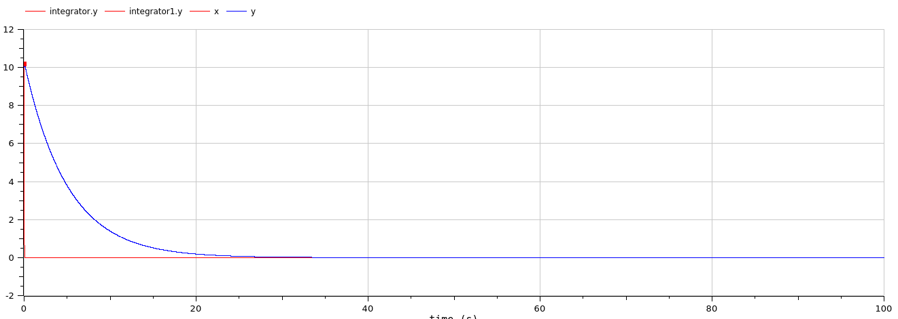
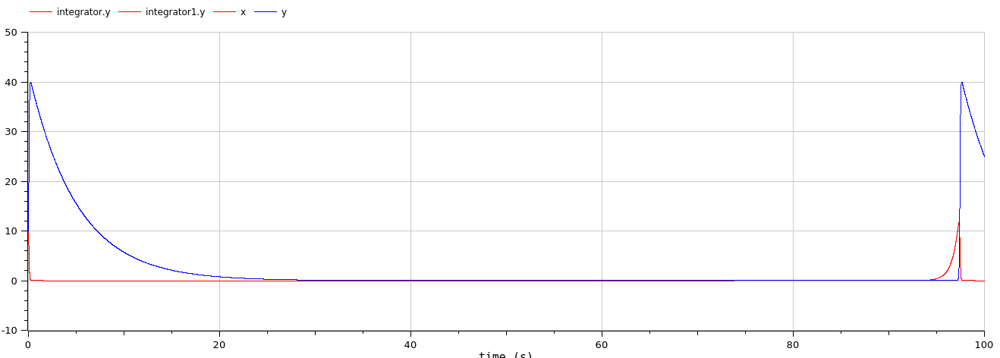
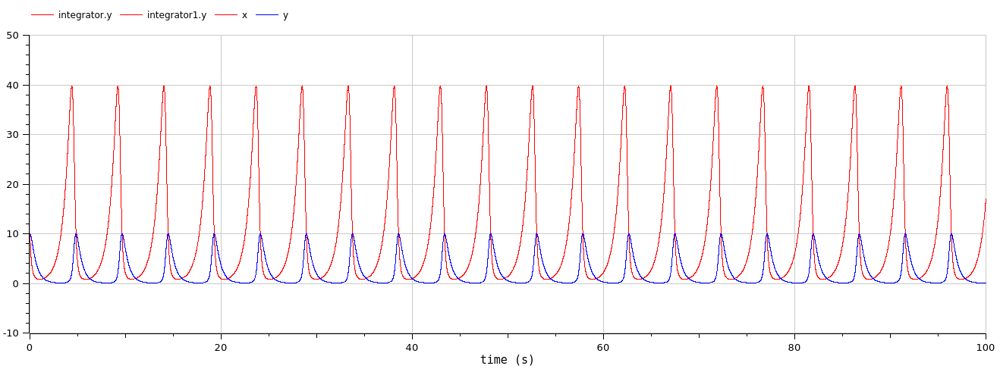
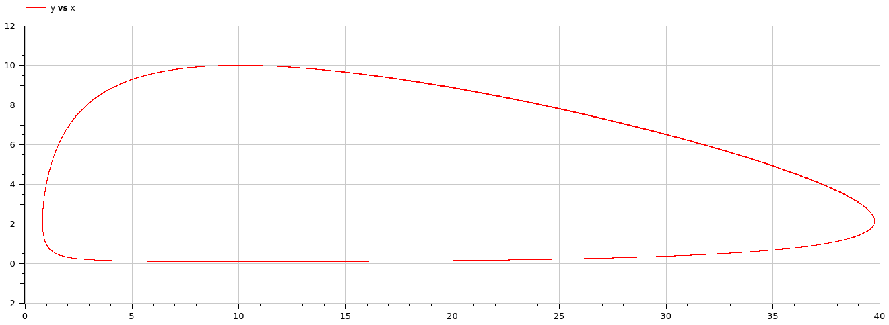

Lotka-Volterra
Does this system stabilize? Why (not)? How can you tell?No, it is a cyclic system, so it will never stabilize. This is easy to see in the parametric graph, where it would converge(spiral inward) to a certain point if it were to stabilize at some point.
Most integrators will converge (probably due to numerical error) after a very long time, Here is an example of the ircsko integrator using 10 000 years.

We also tried playing with the integration parameters and select different methods. This is al made using the block diagram implementation.
The following graphs are calculated with the Rungekutta integration method.

The following graphs are calculated with the Dassl integration method. The outlier is due to the start being higher for some reason. Also, it is remarkable that the peaks are only 15 high instead of 25 for the previous one.


Some integrators give very weird results, like SymSolvercc and Qss


These are the normal charts using the text model. We will now try to alter some of these parameters. We will do this by multiplying each of the parameters by 10 and leaving the others unchanged. Here is the code.
model LotkaVolterra
output Real x(start=10, fixed=true);
output Real y(start=10, fixed=true);
parameter Real alpha=1.5;
parameter Real beta=0.7;
parameter Real delta=0.2;
parameter Real gamma=0.2;
equation
der(x) = alpha*x-beta*x*y;
der(y) = delta*x*y-gamma*y;
end LotkaVolterra;


These are the graphs with alpha = 15. We can clearly see that the frequency of the rising and falling of the predator and prey has increased significantly. The peaks of both predator and prey are visibly higher. The falloff in predator and prey is quick, and the spikes of the predator, indicated in red, are quite short. A remarkable part of this graph is that the preys never entirely die, i.e. reach almost 0.

These are the graphs with beta = 7. Both the parametric and time quantity plot do not seem periodic, but this could be because of the simulation time being too short. Nonetheless we can still see that the maximum attained values for both predators and preys will probably not exceed the initial values of 10 by much.

These are the graphs with delta = 2. Here again we can see that there is a period, but the period is quite large as with the parameter beta. But this time the predators do are significantly less in population than the preys.

These are the graphs with gamma = 2. The frequency has risen significantly when increasing this parameter, therefore will the population rise and fall quicker than with a lower gamma. The predators never go over 10 in numbers, which is in stark contrast with the preys which achieve numbers of up to 40.
 Look up model
model step1
output Real vel(start=0, fixed=true);
equation
vel = if (time > 10) then 0 elseif (time > 170) then 10 elseif (time > 200) then 8 elseif (time > 260) then 18 else 12;
annotation(experiment(StopTime=500));
end step1;
Exercise 4


The max positive displacement due to acceleration is around 0.17 while the negative is -0.23. So the passengers will not fall.
Dmin and Dmax define the range in which no action is taken. So the value will always oscillate within this range. On the second image we can see if we set the max, the function oscillates only under the target function.
Exercise 5

g defines the force or slope with which the value oscillates. If this value is higher it oscillates faster as can be seen on the images.

We have no if-statements technically, only piecewise constructors
A when will only execute the code the moment the event becomes active, meaning only when the value reaches the threshold it will execute the statement. If it were allowed to use when statements in this code fragment this wouldn't change anything. Using the if method, each iteration we set active to true or false while using when we only set active once each time a threshold is exceeded. Which could be more efficient.
active = if u > d_max then true elseif u < d_min then false else pre(active);
Our other line calculating the force would behave differently if changed to when as the force would be 0 most of the time. The estimation would oscillate around d_max continuously as then the event is triggered over and over.
F = if active then g else 0;
Exercise 6


We can see that the passengers will barely not fall using the integrated PID-controller as the displacement exceeds -1. The second image is added for completeness.
Exercise 7 & 8
To find the optimal value we opted for an automated approach. For this we had to figure out two things:
- The cost/evaluation function.
- A way to find the minimum.
As a cost function we used a simple least squares method with a check to reject samples where people fell. Which can be seen in the method below.
def least_squares_speed(rows) -> Optional[float]:
accumulator = 0
for row in rows:
x_psgr = float(row['customPlant.x_psgr'])
v_trolley = float(row['customPlant.v_trolley'])
v_ideal = float(row['lookUp.v_ideal'])
if abs(x_psgr) > 0.35:
return None
accumulator += (v_trolley - v_ideal) ** 2
return accumulator
We also considered alternate cost functions, which maybe also minimize x_psgr but decided against it because it would most likely make the trolley a lot slower.
To find the minimum we opted to implement a simple hill-climber. To avoid getting stuck in local minima we use multiple starting positions. The hill climb function looks like this.
def hill_climb(start: Point, cost_fn):
c_value = evaluate(start, cost_fn)
c_sample = start
c_size = START_STEP_SIZE
c_step = 0
while c_size > START_STEP_SIZE / 100:
c_step += 1
neighbours = calc_neighbours(c_sample, c_size)
values = [evaluate(n, cost_fn) for n in neighbours]
index = np.argmin(values)
# we add an EPS to avoid bouncing back and forward the whole time
if values[index] < c_value - EPS:
c_sample = neighbours[index]
c_value = values[index]
else:
c_size = c_size / 2
print("step", c_step, ":", c_sample, "->", c_value)
return c_sample, c_value
This elementary hill climber will start with quite big steps and when none of its neighbours have a lower value (probably indicating that it is close to a local minimum) it will decrease its step size. The algorithm halts when a certain threshold of step size is reached meaning we have enough accuracy.
This algorithm is not smart at all and will obviously miss a lot of details. We used this simple approach to get an estimate.
We then ran this function 100 times with random starting positions within the given range. Which gave us the following result.
k = 329.3795484078204
ti = 66.35465944290725
td = 0.07505208070216672
Which gives a cost/value of 1707.4864946354312. The graph for these values looks like this.
The csv for this image can be found here
On the first section we see that the ideal speed is approached very nicely. And on the second and third change it quickly accelerates and decelerates.
The highest value for x_psgr is on the first change, it is exactly 0.349977. In a real environment one would obviously add some safety margin as to avoid people falling.
It is important to note that this is using the DASSL integrator. We also had to remove negative values from the range as it made some assertion fail inside modelica.